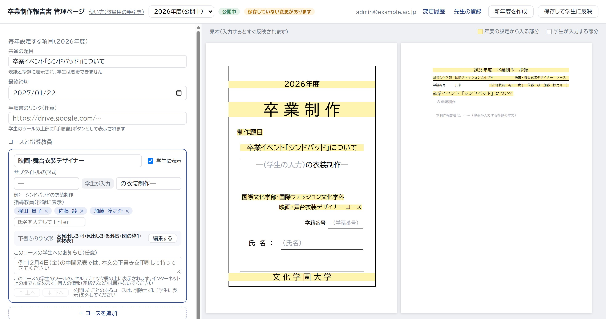

卒業制作報告書 作成ツール
教員用FOR FACULTY2026年度
学生はこのツールで報告書を書き、セルフチェックでエラーを0件にしてから、1つの PDF にして提出します。先生は「管理ページ」で、その年度の題目・コース・指導教員・締切と、コースごとのひな形・お知らせを決めます。

CHAPTER 01 ─ OVERVIEW
学生用ツール・管理ページ・設定の配信の3つでできています。学生の原稿は、学生の手元と学生本人の Google ドライブにだけ置かれます。
その年度の設定（題目・コース・指導教員・締切・ひな形・お知らせ・書き間違えやすい語）を決めて公開する。
公開した年度の設定だけを、学生用ツールに配る（準備中の年度は配らない。誰でも読める）。
学生のブラウザで動く（GitHub Pages で公開）。書く・確かめる・PDF にする。
年度の設定・変更履歴・管理者と先生の一覧（Google ドライブ）。
ブラウザの中と、学生の Google ドライブの「卒業制作報告書」フォルダ。
はじめ方・書き方・保存と PDF・困ったとき。ツールの右の欄（スマホはメニュー）の「使い方（手引き）」からも開けます。
学科の Word のひな形で書き始めた学生に。Word の読み込み方と、いつまでに移すか。
この冊子の表紙にもあります。手順書は、管理ページで「手順書のリンク」を入れると、ツールに「手順書」ボタンが出ます。
CHAPTER 02 ─ STUDENT TOOL
紙面の上でそのまま書き、右の欄のセルフチェックで直します。紙面は、提出する PDF と同じ形です。
ページの一覧エラーのあるページに赤い点
道具書いている物に合わせて入れ替わる
紙面クリックして、その場で書く
保存のようすこの端末とドライブに自動で保存
セルフチェックエラーと警告の一覧
PDFを書き出す提出用と下書き
エラーが残っていても、学生は PDFを書き出す → 下書きの PDF を書き出す で出せます。どのページにも「下書き」の透かし、ファイル名の末尾に「_下書き」が付きます（提出には使えません）。
本文を書き終え、先生のチェックで許可が出たら、学生が抄録のページの 先生の許可が出た（抄録を書き始める） を押して書きます。押すまでは抄録のページは PDF に入らず、「抄録はまだ書いていない」がエラーになります。
Word のひな形で書き始めた学生は、はじめての案内（あとからは右の欄・メニュー）から、自分の Word を読み込みます。学生には別紙「Word で書き始めた人へ」を配ります。
CHAPTER 03 ─ ADMIN PAGE
管理ページは、登録された先生だけが開けます。「管理者」と「先生」で、できることが違います。
| できること | 管理者 | 先生 |
|---|---|---|
| 年度の設定（題目・締切・コース・指導教員・詳細設定） | ○ | － |
| コースの下書きのひな形・お知らせ | ○ | ○ |
| 書き間違えやすい語 | ○ | ○ |
| 新年度の作成・学生への公開・変更履歴 | ○ | － |
| 先生の登録 | ○ | － |
学生が最初に見る本文の組み立て（p.6）。
そのコースの学生のツールに出ます（p.6）。
直したら押します。p.5 の「保存と反映」を見てください。
画面の下の欄から、一覧を直せます（p.6）。
使い方（教員用の手引き）この冊子が開きます
年度「公開中」「準備中」「終了」
変更履歴前の内容に戻す（p.7）
先生の登録管理者と先生を登録する（p.7）
新年度を作成次の年度の準備（p.7）
保存して学生に反映準備中の年度では「保存」と「この年度を学生に公開」
CHAPTER 04 ─ SETTINGS
年度の設定は、管理者が管理ページで行います。入力すると、すぐ右の見本（表紙と抄録）に出ます。
「公開中」は学生が使っている年度。「準備中」は、まだ学生に見えません。
表紙と抄録に入ります。学生は変えられません。
学生のツールの「締切まで○日」に使われます。下の「手順書のリンク」は、学生のツールの「手順書」ボタンになります。
「―」＋学生の入力＋「の衣装制作―」の形。「学生に表示」を外すと、学生は選べなくなります（公開したことのあるコースは削除できません）。
氏名を入力して Enter。× で外します。抄録の見出しの行に出ます（4名以上だと文字が小さくなり、上に「確認」が出ます）。
黄色は、年度の設定から入る部分です。コースのカードを押すと、そのコースの見本になります。
確認の窓のあと保存されます。1分ほどで学生のツールに届きます。
カードの下の「＋ コースを追加」で足し、「↑ 上へ」「↓ 下へ」で並べ替えます。学生がコースを選ぶ一覧も、この順になります。
CHAPTER 05 ─ COURSES
コースごとのひな形とお知らせ、書き間違えやすい語は、管理者も先生も直せます。直したら「保存」を押します。
いまの組み立て（大見出し3・小見出し3…）が出ます。編集する で下の窓が開きます。
そのコースの学生のツールの右の欄（セルフチェックの上。スマホはメニュー）に「○○ コースからのお知らせ」として出ます。1000字まで。インターネット上の誰でも読めるので、個人の情報（連絡先など）は書きません。
CHAPTER 06 ─ YEAR & MEMBERS
管理者が行う作業です。毎年、新しい年度を作って公開します。
学生の原稿は、書き始めた年度の設定のまま開きます（新年度を公開しても、前の年度の学生の表紙は変わりません）。新年度の形で書き直したい学生は、バックアップ → 最初から作り直す（前の原稿は自動の控えに残ります）。
メールアドレスを貼り付けます。メーリングリストの宛先を、そのまま何人分でも貼り付けられます（「名前 <アドレス>」の名前はメモになります）。
読み取った結果。学生のアドレス・大学のアドレスでないもの・登録済みの人は登録しません。
役割（先生／管理者）を選んで登録します。役割の変更・「外す」も、この窓でできます（自分自身と、最後の管理者は外せません）。
保存・公開・新年度の作成のたびに残ります。この内容を読み込む で画面に読み込み、確かめて保存すると、元に戻ります。
学生のドライブ保存は、ふだんは「必須」。Google の障害などで学生が全員ログインできないときだけ「止める」にして保存します（学生はログインせずに書け、原稿はその端末にだけ保存）。直ったら「必須」に戻します。ほかの項目は、手順書が改訂されたときだけ直します。
CHAPTER 07 ─ TROUBLES & SECURITY
学生から相談を受けたときと、管理者が気をつけることです。
| こんなとき | すること |
|---|---|
| 学生がログインできない | LINE・Instagram などのアプリの中で開いていたら、Safari・Chrome で開き直す。ポップアップを許可する。大学のアカウントを選んでいるか確かめる。 |
| 全員がログインできない （Google の障害など） | 管理者が「詳細設定」で学生のドライブ保存を「止める」にして保存（1分ほどで反映。学生は読み込み直すと、ログインせずに書ける）。情報システムの担当にも相談し、直ったら「必須」に戻す。全員への知らせは、Classroom・メールなどで。 |
| 学生が原稿をなくした | 右の欄の「バックアップ」→「自動の控え」を確かめる。学生のドライブの「卒業制作報告書」フォルダの「原稿.json」（右クリック →「版を管理」で前の版）も確かめる。 |
| 共用のパソコンで書き終えた | 「ドライブに保存」→「この端末から原稿を消す（共用のパソコンで）」と、Google からのログアウト。 |
| 「別のタブで開いています」 | 同じパソコンの別のタブでも開いている。もう一方を閉じて「こちらで続ける」。 |
| エラーが消せず、見せられない | 「PDFを書き出す」→「下書きの PDF を書き出す」（透かし入り。提出には使えない）。 |
| 指摘が正しくない | 「補助」の指摘は「このままにする（確認済み）」で外せる（右の欄の「確認済み」から「戻す」で戻せる）。手順書のルールの指摘は外せない。 |
| 変更が学生に出ない | 公開中の年度を保存したか確かめる。反映まで1分ほど。学生はページを読み込み直す。 |
| 間違えて設定を変えた | 「変更履歴」→「この内容を読み込む」→ 確かめて保存（p.7）。 |
| 管理者がいなくなった | 管理ページでは誰も直せない。管理用スプレッドシートの編集者が「管理者」シートを直す（シート名は「管理者」、役割は「管理者」か「先生」）。 |
担当が替わるときと、年に何回か行う作業は「引き継ぎ手順書」（GitHub のリポジトリの docs/引き継ぎ手順.md）に沿って行います。管理者の登録・スプレッドシートの共有・配信の窓口・Google Cloud・GitHub を、前の担当者と一緒に移すと確実です。管理ページとスプレッドシートの場所は、リポジトリの gas/deployments.json にあります。
2026年度のツールの画面で作っています。画面は少し変わることがあります。いちばん新しい冊子は、管理ページの「使い方（教員用の手引き）」から開けます。学生用の手引きは、学生用ツールの右の欄（スマホはメニュー）の「使い方（手引き）」から開けます。